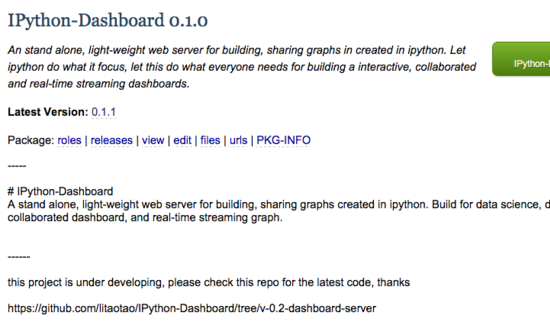
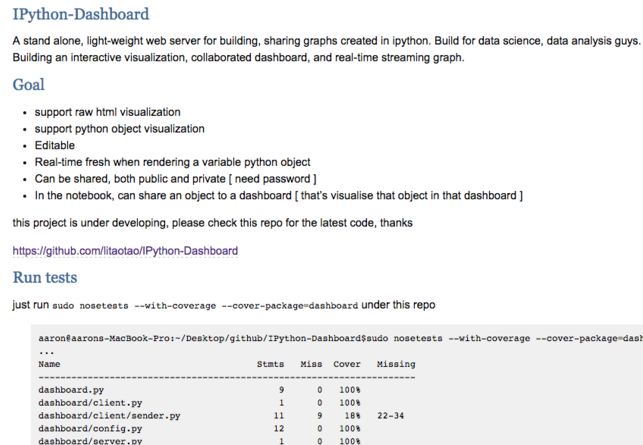

打包 python package 到 pypi
2015-10-24
1. 注册 pypi 账号
点击这张图片去注册吧。
2. 编写 setup.py 必要信息
setup(
name="IPython-Dashboard",
version='0.1.1',
author="Taotao Li",
author_email="taotao.engineer@gmail.com",
url="https://github.com/litaotao/IPython-Dashboard/tree/v-0.2-dashboard-server",
keywords = ("ipython", "dashboard", "interactive", "visualization", "data science", "data analysis", "streaming"),
license="BSD",
packages=find_packages(),
package_dir={"dashboard": "dashboard"},
include_package_data=True,
description="An stand alone, light-weight web server for building, sharing graphs in created in ipython. Let ipython do what it focus, let this do what everyone needs for building a interactive, collaborated and real-time streaming dashboards.",
long_description=io.open("README.md", encoding='utf8').read(),
install_requires=io.open("requirements.txt", encoding='utf8').read(),
...
...
)
上面是我的一个项目的 setup.py 内容，可以对比源文件和在 pypi 上到描述。
我觉得关键的几 点是：
- keywords: 这点就不用说了吧
- description: 这点很多人都会忽略，其实也很重要的，我相信pypi在检索的时候，也会检索里面的一些关键字的。
- longdescription: 这点也很重要，或者说不能更重要了。如果说上面的
keywords和description能提高别人搜索到项目的概率的话，那 `longdescription就在很大程度上决定别人对你对项目有没有进一步的想法了。对比一下这几种long_description`- No long_description

- Ugly long_description 
- long_description with highlight, but need to make it cleaner 
- No long_description
对了，还要注意一下，pypi 上只接受 rst 格式的 readme，不接受 markdown 格式的，所以想要高亮和排版的话，需要先把 md 格式的转换成 rst 格式的 readme。这点改天说。
3. 发布包元信息到pypi
在你的包目录下使用命令 python setup.py register 在 pypi 上注册你的包信息，所谓注册包信息就是在 pypi 上建立你的包元信息，包括作者，描述等等。但是要注意的是，注册完元信息别人还不能使用 pip install package 来安装你的包。注册完元信息只是在 pypi 上占个坑而已。
就如截图所示，这个项目就是只注册了元信息，所以没有下载包的那个链接。
4. 发布包到pypi
使用 python setup.py sdist upload 发布包，即先将包在本地打包，然后上传到pypi，然后就ok了。